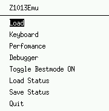
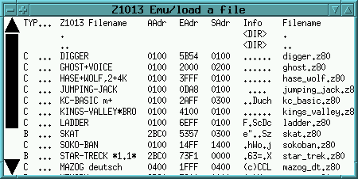
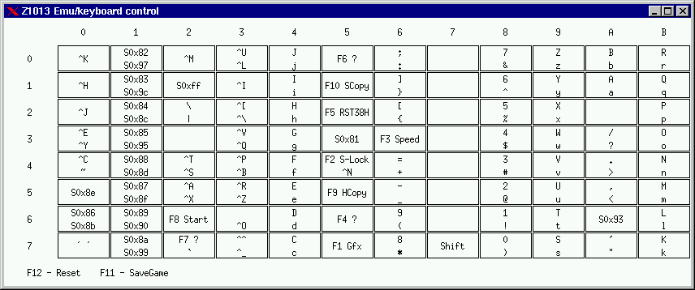
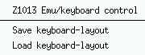
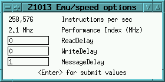

History up to V1.33 99/09/07 by Hobbes
0. Z1013 and Introduction
The intension to write this program was, I found some cassettes
and have tried to sample the contents into computer.
I realized the quality of the recorded software was very bad
and so I made algorithms that recognizes the incoming
digitized data and write the binaries to disk. What should I
do with this living history?!......
Special thanks to Marat
Fayzullin . His portable
Z80-prozessor was used to build a portable Z1013 emulator.
I´ve got my first Z1013 at the beginning of 1988. Together with
a cassette recorder it cost about 1000,- M + 500,- M
(M means Mark - currency of GDR). A lot of money. The configuration
was: 16KBytes RAM, 1KB (32x32 chars) ScreenMemory, 8x4 foil-keyboard,
HF-modulator and - a new feature - a 2 Mhz U880 (Z80) CPU.
Once you´ve bought such thing, you need a power pack - 220V AC
in - 12 V/3A AC out (take a transformer and good
luck). And after you have soldered the foil-keyboard onto the motherboard
- turn on and much fun.
Next steps were:
Prepare the elastomer-keyboard (in reality there were 3 of telephon-keypads
(3x4 matrix) - sold as a computer keyboard).
Take a deep look into my "Junost 402B" (Russian TV-Set) - figure out
where is the video-composite signal and connect to computers video-signal.
Without an HF-modulator you get a better picture.
Pick up the soldering iron again and improve memory to incredible 64KBytes.
By the end of the year 1989 (before the German Wall fall) this
computer had floppy-disks (up to 720K-CPM compatible drives or Commodore1541),
it runs with 4MHz, with do-it-yourself- mices, giant 512KBytes ram, pixelgraphics
and hundreds of different keyboards (mainly from typewriters). And most
important: there where a lot of people developing software.
After the German Wall has fallen I´ve bought a printer
and a serious keyboard. Now my favourite computer was perfectly equiped - and should live no more then a year.
0.1 First Steps & MainWindow
When you start the emulator a window will be opend and it may looks like
this:
Two different fonts are included within the emulators package.
Now you can enter a command "D 300 400 <Enter>" and
look at screen.
 |
You´ve entered you first command. Another
command is "T F000 EC00 400" - means Transfer 0x400 bytes from
0xf000 to 0xec00.
To start a programm, just load load and type
something like "J 100" - 100 should be the starting address
of the program you´ve loaded.
For a detailed list of commands refer handbook - not included this
package. |
1. PopupMenu "Z1013EMU"
|  |
The main-windows popup: It provides various functions
to use the emulator in a more comfortable way. |
1.1 Load

The first 7 colums show the contens of a Z1013-file. This information
is stored in the 32 first byte of each .z80 program. The last colum shows
the real disk-filename to you.
| TYP |
theres no strict definition what letters to use. Most common are the
following:
C - exeCutable( start it with command J [SAdr]
B - Basic
M-Memorydump/Machinecode
D - (hex)Dump s- AssemblerSource |
| ... |
headermark used for cassette-interface to detect first block |
| Z1013 Filename |
16-Bytes "all characters are possible" filename |
| AAdr |
first address in memory |
| EAdr |
last address in memory |
| SAdr |
address you need to start a executable with the "J" command |
Just left-click on the row and the file will be loaded between the addresses
AAdr and EAdr. Be careful not clicking during a runnig program. See, if
there is a running program and you load new machine-code whithin the running
code - most time it results an unstable mutation.
But you can use this feature to load an Basic-program.
1. ´Load´ KC-Basic ("KC-BASIC m+ 0100
2Aff 0300 ..Duch kc_basic.z80" is the interpreter)
2. type F8 or "J 300" to start the interpreter
3. he asks for maximum ramsize - press enter
4. after prompt OK> the basic interpreter is initialized
5. now you can ´Load´ basic programs directly
into the memory.
But be carefuly ONLY basic-programs!
And don´t overwrite memory below 0x2BC0!
1.1.1
There is only a "Load" item - How can I save something?
The emulator patches the rom-code and hooks into the rom-codes´ save-subroutine.
So if you call the monitors save command like this "@S 100 1000 100"
, it will work. Even other programs that calls the monitors save-subroutine
works fine. Note: if you see this message:
w can't patch ROM-code @0xFD0E ( 21 0e 00) - wrong rom image?
w saving is currently not available.
That means the emulator hasn´t found these bytes at address and
can´t patch the rom-code. If you want to save, in such a case you
should try the original monitor-rom "monitor.z80" i packed with.
The ROMcode will be patched for load-command too. So you can use @L
... . Most time the hard - dump directly into the memory - method
works fine. I think only pascal-compiler needs this type of load. If it´s
not possible to patch ROMcode a message raises:
w can't patch ROM-code - wrong rom image?
w loading is currently not available.
1.2 Keyboard
Because it was such a gracious idea to sell a foile-keyboard with 8x4 matrix,
many improvments have been introduced. Over all there are different types
to adopt a keyboard:
-
keyboards compatible to original rom-code and matrix (lookup tables with
EPROM, even expensive U880 (Z80) solutions )
-
A2 - keyboard layout - some of the z1013 had been delivered with a 4KByte
ROM, so you where able to switch between 8x8 matrix and 8x4 matrix, by
setting a jumper
-
R. Brosig came up with 8x12 electronical typewriter keyboard and 4k adopted
rom-code, later G. Eisenkolb introduced a simple hardware solution conform
with Brosig-ROM-code
-
many others developed their own circuit soulutions
I will refer to the first three points. If you don´t ask the
operating systems input function for a keyboard-input or have code like
this "OUT column; IN row", it raises problems, because selected
key´s you try to catch(by colum/row) differ from 8x4 to 8x8 or 8x12
matrix. Even on 8x12 keyboards there exists various layouts, depends on
the typewriter it cames from.
When you open the keyboard window it looks like this:

These are the rows( 0..7 ) and colums ( 0..B ). If there are 2 key in
one cell (up/down) upper means don´t set shift key and lower this
is a key together with shift. In column 7 there´s only a shift key.
Originally there was a control-key too, but at this moment there´s
no need. Because if you press e.g. CTRL-K it will be mapped to row0/column0
and most of the CTRL-codes mapped to keys you don´t need CTRL.
Keys marked with S0x... has a special function. They has been used
in BASIC -Interpreter; if you press a key, sends a keycode above 0x7f the
monitor-rom take a look into a additional function keytable and returns
strings like GOTO, GOSUB ... . I didn´t matter
these type of keys. If your keyboard can send keycodes >=0x80, it will
work. If not, you don´t miss it.
On a Z1013 8x12 keyboard there are real funktion keys F1 to F10. I´ve
tried to figure out what does they do:
-
F1 graphics mode ; adds 0x80 to each keycode -
so you can display chars with code >0x80
-
F2 shift-lock
; similar to the keyboards shift-lock - it inverts the meaning of the shift
key
-
F3 speed
; switches between slow(original)keyboard-subroutine and fast Brosig-subroutine
-
F4 ?
-
F5 RST38H
;- something like a esc-funktion - quit to monitor when ever a keyboard-funtion
is called and this key is pressed, then manchine-code 0xff==RST38h will
be executed (jumps to address 0x38)
-
F6 ?
-
F7 ?
-
F8 start
; starts a loaded program - internal the monitor looks on cell 0xec if
its an executable ´C´ then jump to [0xe4] (staring address
in file header after load)
-
F9 HCopy
; every char printed on screen will be tailed to printer
-
F10 SCopy
; make a screendump to printer
Cursor functions where realized with key-codes 0x08, 0x09,
0x0a, 0x0b that is excatly the same as ^H ^I ^J ^K. <Enter>
is same as ^M.
F12 & F11 have special meanings.
F11: If save file "z1013save.txt" is set, a block will be saved automatically.
Refer save file mechanism.
F12: Outside U880(Z80)-CPU it sets instruction-pointer
PC to 0xf000 - same as you press the reset key on the original computer.
"ESC"key is mapped to code 0x3 (break). So it will if you press ESC you
can break a basic program or quit a running program (escape from).
This is how the keyboard works. Every time you press a key it will be
translated to row/colum with shift/no-shift.
In the emulator you can change your keyboard-layout. Most time the default
layout "keyboard.z80" works fine, but for instance program "ghost.z80"
needs the "oldkeys.z80"(see load
keyboard-layout, if you want to change your layout). Another
way to change the layout : just drag&drop and save
keyboard-layout.
In "oldkeys.z80" I´ve changed only "<-", "<Space>", "->",
"U" to match "cursor-left", "cursor-up", "cursor-right", "cursor-down".
So most games should work.
|  |
Lets see what brings "Z1013 Emu/keyboard
control" popup |
1.2.1 Save keyboard-layout
Let take an example:
If you start the program "wizard_of_danger.z80"
you will see - Up/Down and <ENTER>/<SPACE> could be changed.
I think you should drag-drop from ^M to ´ ´
and
^J
to ^K. If you have changed your keyboard layout by drap&drop
and you think its a good choice. Save this example under system/ with filename
wizard_keys.z80.
Next time you want to play "wizard_of_danger.z80" you have to load
this layout.
1.2.2 Load keyboard-layout
If you want to use a special keyboard-layout, with this options you can
load it. See Example at point Save keyboard-layout.
To prevent to load a keyboard-layout every-time you change the running
program, just edit the file z1013keys.txt.
1.3 Performance
|  |
| current "MIPS" rate |
| This emulator has the same performance than a 2,1 MHz Z1013 - based
mainly on my subjective impression |
| after each read cylce - 0 rounds to wait ; lower ist faster |
| after each write cylce - wait 0 rounds ; lower is faster |
| how many opcodes it has to pass, bevor a system-call will be processed
; lower ist better - higher ist faster |
|
1.4 Debugger
Breaks into runnig emulator. Sometime its very interesting for me, why
a program not work or what does the program do. So you can use single-step
debugger - figure out what key are used - patch your lives ....
1.5 Toggle Bestmode ON/OFF
If window size multiplicator 1 or 2 (means 512x512 or 768x768 pixel) I've
designed an anti-aliased font-set. It looks fine, so you want to
use these fonts.
1.6 Load Status
Restores machine state from saved file "z1013emu_freeze.bin".
1.7 Save Status
Writes the current emulator-state to disk into a file "z1013emu_freeze.bin".
It writes all internal registers and a memory dump. If a special hardware
is available, the hardware-state will be written too.
Next time you want to restore machine-state use emulator with -st
filename option.
1.8 Quit
Just leave the emulator. There´s no data written to disk.
Hobbes 99/09/07